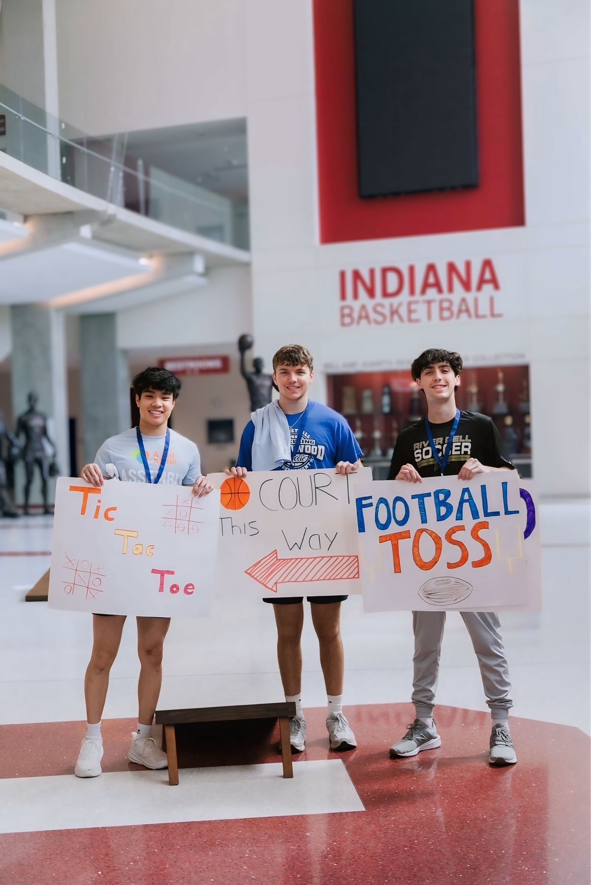
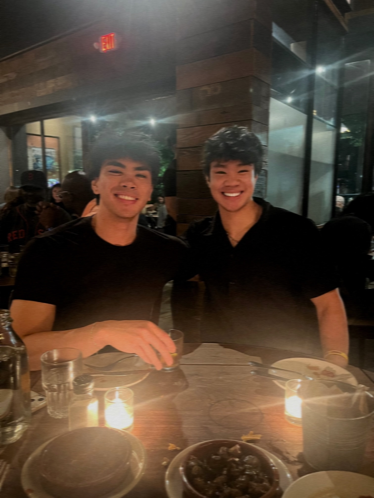
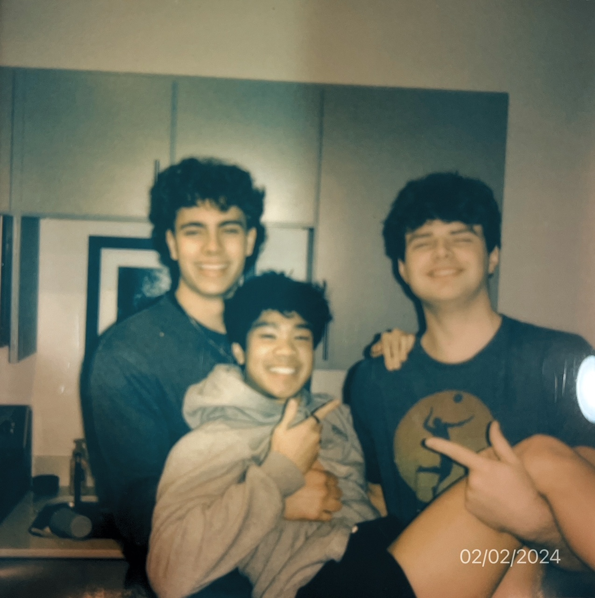
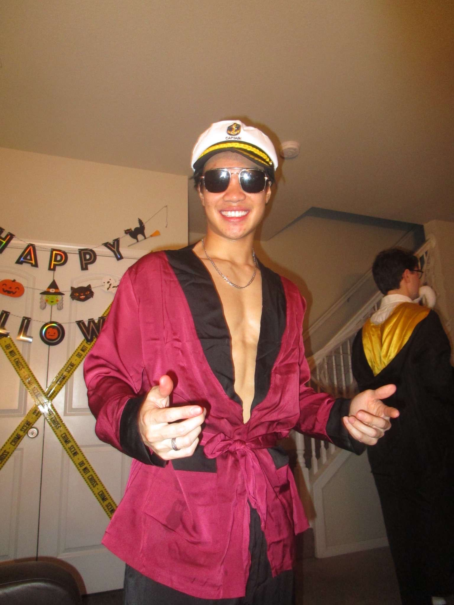
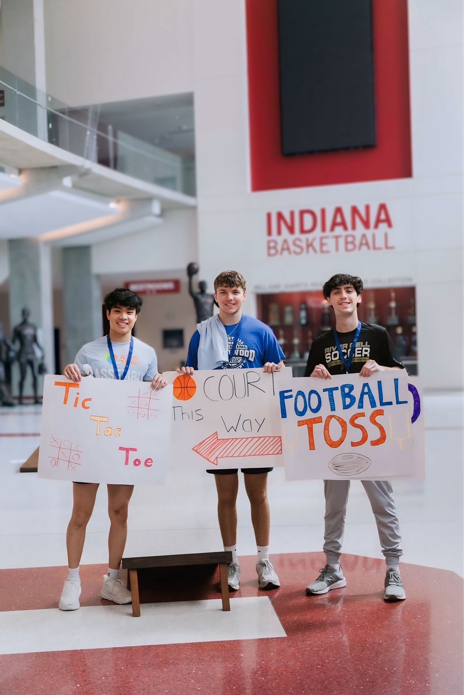
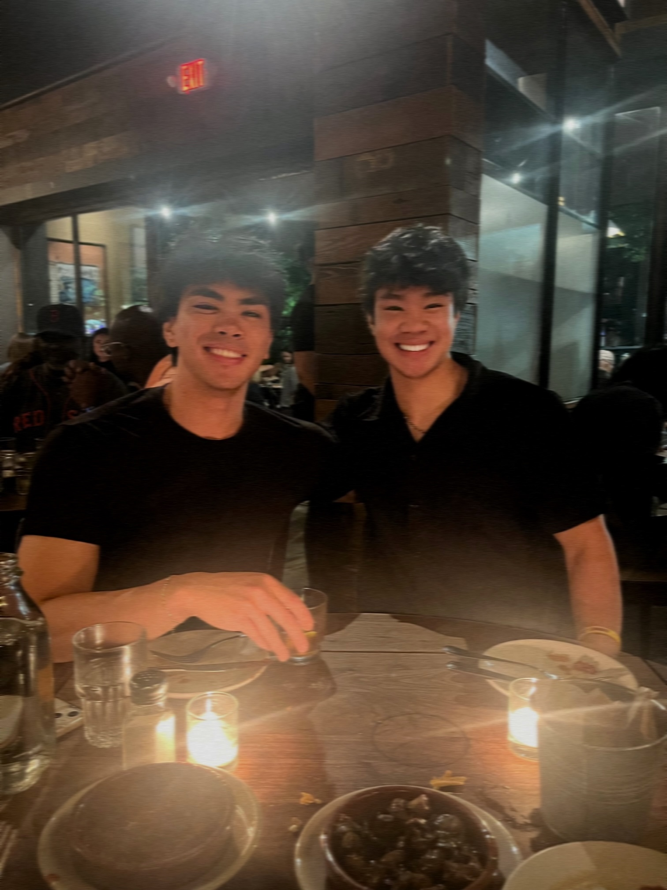
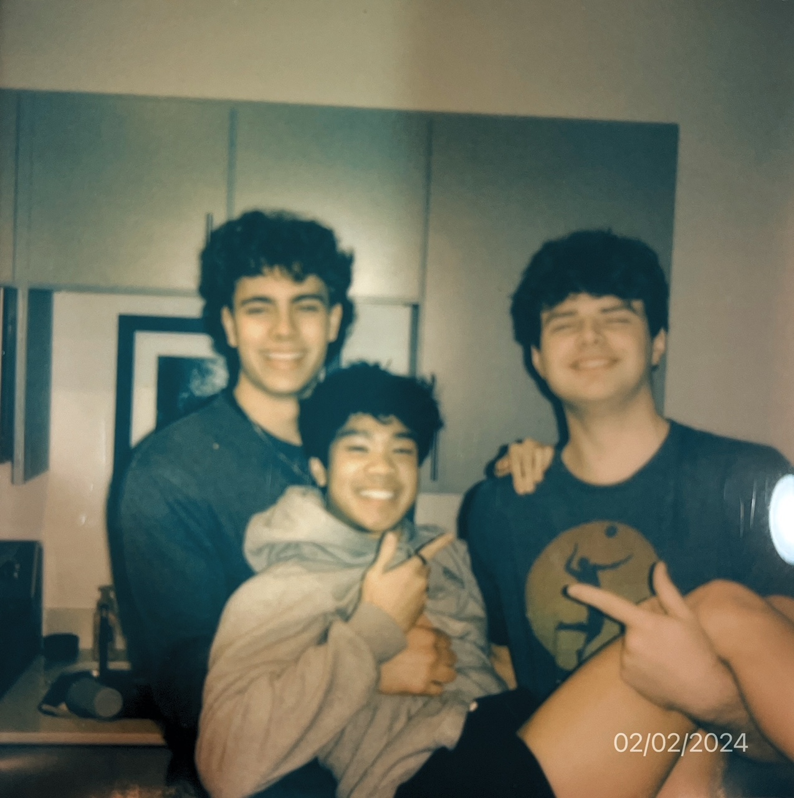
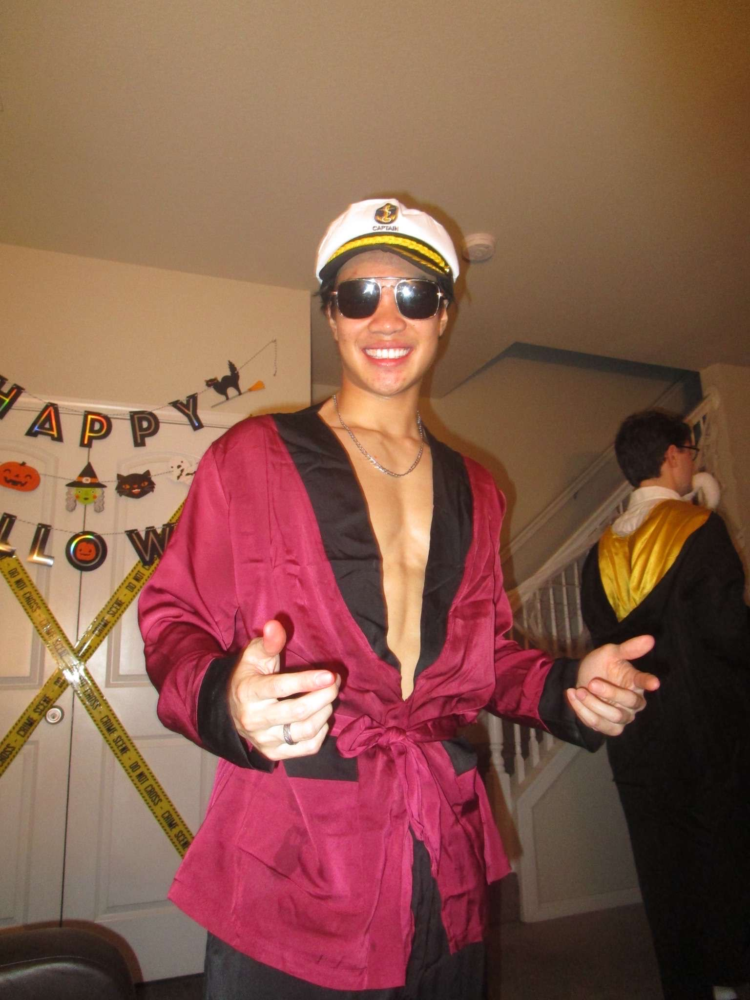

Bio
Hi, I’m Carl Fampo 👋. I’m a Computer Science student at Indiana University with a passion
for building impactful projects, exploring new technologies 💻, and pushing myself both mentally and
physically 🏋️♂️.
Ever since I first coded in Python 🐍, I’ve loved the challenge of taking an idea from concept to reality. My
tech stack includes Java ☕, Python 🐍, JavaScript ✨, SQL 🗄️, HTML5 & CSS3 🌐, and Kotlin 🟣. I’m always
exploring new tools to expand my skill set 🚀.
Outside of coding, I’m all about staying active and creative. Volleyball 🏐 keeps me competitive, hitting the
gym 🏋️♂️ keeps me disciplined, and DJing 🎧 lets me express my musical side. Curating playlists 🎶 has
become one of my favorite ways to combine creativity and personal taste into something others can enjoy.
Beyond hobbies, I value growth and purpose 🌱. I strive to get closer to God 🙏, continually improve my
skills 🛠️, and seek out experiences that challenge me to think differently and work harder.
When I’m not coding or training, you’ll often find me experimenting with new tech 💡, discovering new music
🎵, or collaborating with friends 🤝 on side projects. I love challenges that push me to learn, laugh, and
grow.
 






